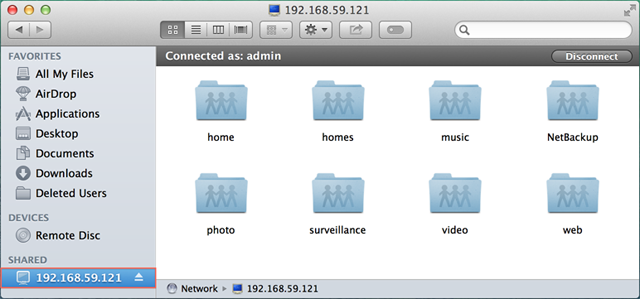

Přehled
Server Synology NAS je určen k rychlému a jednoduchému ukládání a sdílení souborů v rámci vaší lokální sítě, přičemž vám umožní přímý přístup ke sdíleným složkám uloženým na Synology NAS, aniž byste se museli pokaždé obtěžovat s přihlašováním do DSM. Budete například moci ukládat soubory na server Synology NAS pomocí Finder stejně jako ostatní síťová zařízení.
Přístup ke sdíleným složkám pomocí Mac OS
- Na vašem počítači Mac otevřete Finder.
- V horní části obrazovky najděte nabídkovou lištu.
- Klikněte na možnost Přejít a poté vyberte položku Připojit k serveru.
- Zadejte IP adresu pro váš server Synology NAS, pře niž napíšete „afp://“, například „afp://192.168.59.121“. Pokračujte klepnutím na možnost Připojit.
- Zadejte uživatelské jméno DSM a heslo. Výš uživatelský účet musí mít náležitá oprávnění pro čtení nebo zápis pro danou sdílenou složku, do níž chcete získat přístup. Pokračujte klepnutím na možnost Připojit.
- Pokud jsou vaše údaje správné, uvidíte server Synology NAS v seznamu v okně Finder pod nadpisem Sdílené. Dvojitým kliknutím na sdílenou složku zobrazíte její obsah. 


Oblíbené servery: Stisknutím tlačítka se znaménkem plus (+) přidělíte IP adresy oblíbeným serverům pro budoucí použití. Můžete také kliknout na tlačítko s hodinami a zobrazit tak seznam serverů, ke kterým jste se v poslední době připojili.